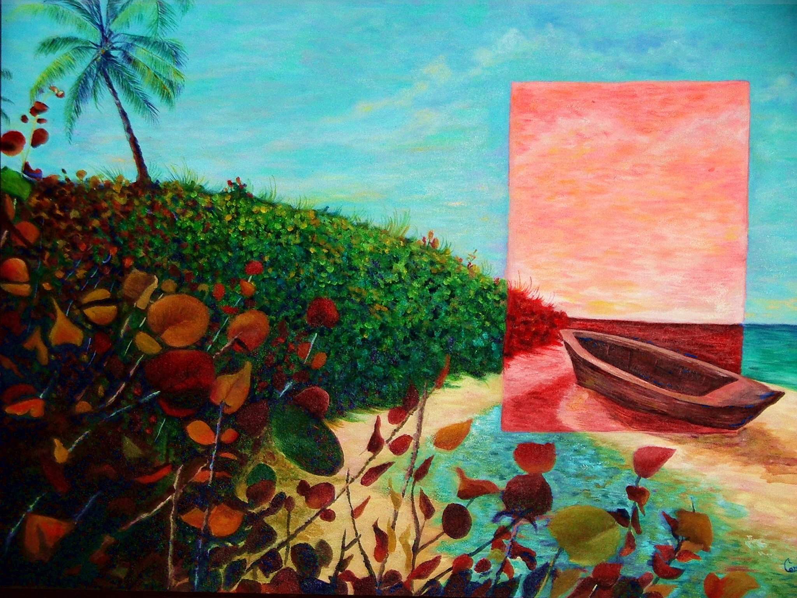

    
    
    <p>Like her brother, Carelis also graduated from <strong>Central High Arts School</strong> and took herself through the art world in a special way.
    This paint here by Carelis represented Puerto Rico for a year at the U.S. congress as part of an art Expo. Carelis painted the piece overnight
    just being responsible with her duties and deliver her job. Amazing that just a simple paint of a beach will represent the island in such an important
    place.</p>